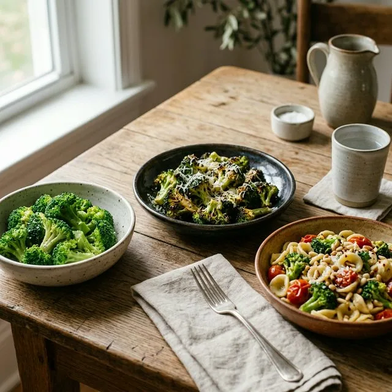
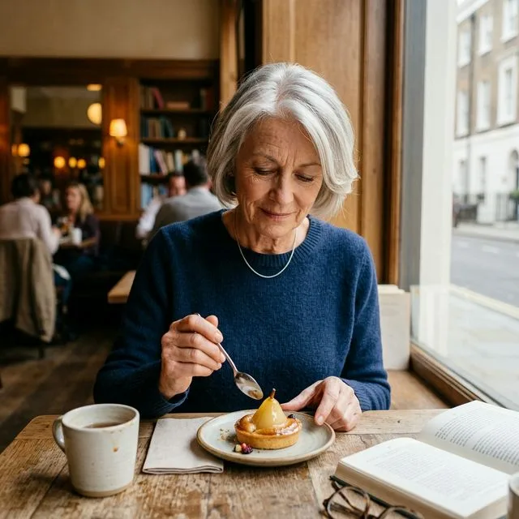

Byłem na diecie. Schudłem. Potem wróciłem do starych nawyków. Przytyłem z powrotem. Znam to zdanie, bo wypowiedział je prawie każdy po pięćdziesiątce. I za każdym razem brzmi jak porażka osobista. Tyle że to nie jest porażka. To biologia. A biologię da się zrozumieć.
Kluczowe wnioski
- Najważniejsze: Byłem na diecie.
- W artykule znajdziesz konkrety o: Dlaczego dieta po 50-tce zwykle kończy się w tym samym miejscu.
- Drugi kluczowy temat: Czym różni się nawyk od diety i dlaczego to ma znaczenie.
Jeśli próbujesz zmienić sposób jedzenia, ale wciąż wracasz do punktu wyjścia, przeczytaj też jak budować nawyki po 50-tce zamiast liczyć na zryw. Mechanizm jest bardzo podobny: zryw przegrywa, system wygrywa.
Dlaczego dieta po 50-tce zwykle kończy się w tym samym miejscu
Wyobraź sobie, że kupujesz nowe buty. Są piękne, modne, ale o jeden numer za małe. Pierwsze dni jeszcze je nosisz, bo są nowe i cieszy Cię sam widok. Potem zaczyna boleć. Potem zdejmujesz je przy drzwiach. A po tygodniu wracasz do starych, wygodnych trampek.
Z wieloma dietami bywa podobnie. Są nowe, ekscytujące, dają efekty i bywają o jeden numer za małe dla Twojego prawdziwego życia. Wytrzymujesz kilka tygodni. Potem rzeczywistość wygrywa.
To nie jest brak silnej woli. To jest fakt neurologiczny. Twój mózg przez 50 lat budował skojarzenia z jedzeniem. Zapach rosołu, smak babcinego ciasta, pizza w piątkowy wieczór, coś słodkiego po ciężkim dniu. To nie są tylko smaki. To są wspomnienia, emocje i nagrody. Dieta próbuje wymazać 50 lat zapisów w 3 tygodnie. Nie ma szans.
Źródło: Polivy, Herman; Harvard Health Publishing
Czym różni się nawyk od diety i dlaczego to ma znaczenie
Dieta ma początek i koniec. Nawyk nie ma końca. Jest taki sam jak mycie zębów. Nikt nie mówi: byłem na diecie mycia zębów przez trzy tygodnie i potem przestałem. Myjesz zęby, bo tak jest. Koniec historii.
Cel nie powinien brzmieć: jem zdrowo przez 30 dni, żeby schudnąć. Cel powinien być inny: stopniowo zmieniam kilka zwyczajów żywieniowych tak, że po roku jem trochę inaczej niż rok temu. I to jest już normalne, a nie męczący wysiłek.
Różnica jest fundamentalna. Dieta częściej wymaga codziennego pilnowania się. Nawyk po utrwaleniu wymaga zwykle mniej świadomego wysiłku. Po prostu zaczyna dziać się bardziej automatycznie.
Źródło: Lally et al.; Verplanken
Czy działać etapami? Tak. I to jest jedyna droga, która naprawdę działa
Wyobraź sobie, że chcesz nauczyć się grać na gitarze. Nie siadasz w poniedziałek i nie uczysz się od razu wszystkich chwytów, teorii muzyki i pięćdziesięciu piosenek. Uczysz się jednego akordu. Potem drugiego. Potem łączysz je razem. I po pół roku grasz jakoś, bo budowałeś wszystko stopniowo.
Z jedzeniem jest dokładnie tak samo. Zamiast rewolucji robisz jeden mały krok co 2-3 tygodnie. Mózg nie protestuje, kiedy zmiana jest mała. Protestuje wtedy, kiedy jest duża, gwałtowna i pachnie karą.
Jak to wygląda w praktyce
- Tydzień 1-2: zamiast coli albo soku wybierasz wodę z cytryną lub wodę gazowaną. Tylko to.
- Tydzień 3-4: zmniejszasz porcję kolacji o jedną trzecią. Nadal jesz to samo, tylko trochę mniej.
- Tydzień 5-6: dodajesz do jednego posiłku dziennie warzywo albo źródło białka.
- Tydzień 7-8: chleb pszenny zamieniasz na pełnoziarnisty. Smak podobny, sytości więcej.
Widzisz, co się tu dzieje? Niczego nie zakazujesz. Niczego nie wycinasz z dnia na dzień. Dodajesz, zmniejszasz, zamieniasz. Powoli. Mózg nie odbiera tego jako diety. Odbiera to jako normalne życie.
Co jeśli nie lubisz zdrowych produktów

Oto prawda, której rzadko mówi się wprost: wiele z tego, co nazywamy smakiem, nie jest urodzonym gustem. To przyzwyczajenie.
Przez lata szkoliliśmy siebie na konkretne smaki, tekstury i sposoby jedzenia. Można się tego nauczyć. I można się tego częściowo oduczyć. Nie szybko. Ale skutecznie.
Jeśli nie lubisz brokuła gotowanego na parze, to wcale nie znaczy, że nie lubisz brokuła. Może po prostu nie lubisz tej jednej wersji. Pieczony z oliwą, czosnkiem i parmezanem to już zupełnie inna historia. Ze szpinakiem, fasolą, owsianką, jogurtem naturalnym jest dokładnie tak samo. Forma zmienia wszystko.
Źródło: Birch, Marlin; Pliner
Jeśli problemem nie jest tylko jedzenie, ale cały styl życia wokół niego, zobacz też dlaczego siłownia po 50-tce pomaga budować regularność. Często łatwiej zmienić nawyki, kiedy zmienia się też otoczenie.
Jak zmniejszać ilość rzeczy, które lubimy, ale nam nie służą
Tutaj wiele osób robi ten sam błąd: zakazuje sobie czegoś całkowicie. Koniec z czekoladą. Koniec z alkoholem. Koniec z białym pieczywem. Przez tydzień idzie dobrze, a potem przychodzi jeden wieczór i zjadasz całą tabliczkę zamiast kostki.
Zakaz sprawia, że jedzenie staje się bardziej magiczne. Niedostępne jest atrakcyjniejsze. To nie słabość. To neurobiologia nagrody.
Konkretne techniki zmniejszania bez zakazu
- Mniejsza porcja, ta sama przyjemność: jesz mniej, ale wolniej i uważniej.
- Odsuń pojemnik: jeśli słodycze czy orzechy nie stoją pod ręką, jesz mniej bez walki.
- Zamień proporcje: więcej białka i warzyw, mniej dodatków skrobiowych.
- Nie kupuj dużych opakowań: kontrola zaczyna się w sklepie, nie przy kanapie.
- Zjedz coś małego przed: woda albo mała przekąska potrafią zmniejszyć głód przy głównym posiłku.
Jeżeli wracasz do starych schematów również dlatego, że wszystko próbujesz naraz, koniecznie przeczytaj też 5 największych błędów początkujących po 50-tce. Ten sam mechanizm dotyczy treningu, diety i każdej zmiany stylu życia.
Czy można jeść wszystko, ale z umiarem

Tak. I to jest odpowiedź mniej efektowna niż internetowe hasła, ale dużo bardziej prawdziwa.
Nie istnieje jeden produkt, który w małej ilości zniszczy Twoje zdrowie. Nie istnieje jeden posiłek, który popsuje sensownie przejedzony tydzień. Problemem prawie nigdy nie jest jeden kawałek ciasta. Problemem jest wzorzec, który powtarza się miesiącami.
Źródło: Mozaffarian
Kluczowe słowo to wzorzec. Nie jeden dzień. Nie jeden obiad. Nie jedna kolacja. Jeśli przez większość czasu jesz przyzwoicie, to miejsce na przyjemności nie zrujnuje niczego. Życie ma smak. I po pięćdziesiątce wiesz to już bardzo dobrze.
Dobra dieta po 50-tce. Co naprawdę ma znaczenie
Zamiast listy zakazanych produktów lepiej mieć listę rzeczy, które warto dodać. Dieta addytywna jest psychologicznie łatwiejsza i zwykle skuteczniejsza niż dieta eliminacyjna.
Co warto dokładać do codziennego jedzenia
- Białko przy każdym posiłku: mięso, ryby, jaja, nabiał, strączki.
- Więcej warzyw: nie zamiast wszystkiego, tylko obok.
- Mniej żywności mocno przetworzonej: bo łatwo zjeść jej więcej, niż planujesz.
- Woda przed posiłkiem: mózg częściej myli głód z pragnieniem, niż się wydaje.
- Jedzenie wolniej: sytość dociera z opóźnieniem, więc pośpiech zwykle kończy się nadmiarem.
Jeśli dopiero układasz sobie podstawy stylu życia po 50-tce, pomocny będzie też tekst jak zacząć na siłowni po 50-tce bez chaosu. Bo jedzenie i ruch najłatwiej działają wtedy, kiedy zaczynają wspierać się nawzajem.
Na koniec — coś naprawdę ważnego
Jedzenie to nie tylko paliwo. To kultura, przyjemność, wspomnienia, relacje i smak życia. Cel nie jest taki, żeby jeść idealnie przez resztę życia. Cel jest prostszy i mądrzejszy: jeść trochę lepiej niż rok temu. A za rok znowu trochę lepiej.
Każdy krok w górę się liczy. Nawet mały. Nawet jeśli przeplatany wpadkami. Bo wpadki są częścią życia, a nie dowodem, że wszystko się rozsypało.
Po pięćdziesiątce masz coś, czego często brakowało w młodości: cierpliwość i perspektywę. Wiesz już, że rzeczy, które trwają, są zbudowane solidnie, a nie szybko. Twoja dieta po 50-tce może być dokładnie taka sama. Powolna, rozsądna, oparta na nawykach, które zostaną.
Źródła
- [1] Polivy, J., Herman, C.P. (2002). Causes of Eating Disorders. Annual Review of Psychology.
- [2] Lally, P. et al. (2010). How are habits formed: Modelling habit formation in the real world. European Journal of Social Psychology.
- [3] Birch, L.L., Marlin, D.W. (1982). I don't like it; I never tried it. Appetite.
- [4] Verplanken, B. (2018). The Psychology of Habit. Springer.
- [5] Wansink, B. (2006). Mindless Eating: Why We Eat More Than We Think.
- [6] Mozaffarian, D. (2016). Dietary and Policy Priorities for Cardiovascular Disease, Diabetes, and Obesity. Circulation.
- [7] Pollan, M. (2008). In Defense of Food: An Eater's Manifesto.
- [8] Harvard T.H. Chan School of Public Health — The Nutrition Source.
FAQ
Co jeść po 50, żeby schudnąć bez efektu jo-jo?
Najlepiej postawić na prosty model: więcej białka, warzyw i pełnych produktów, mniej kalorii płynnych i podjadania. Kluczowe jest utrzymanie planu, a nie krótkie diety-cud.
Ile białka po 50. roku życia dziennie?
U aktywnych osób po 50 często sprawdza się zakres około 1,2-1,6 g białka na kg masy ciała dziennie. Dokładną ilość warto dopasować do celu, nerek i poziomu aktywności.
Czy po 50 trzeba całkiem rezygnować z węglowodanów?
Nie. Zwykle lepszy efekt daje wybór jakości węglowodanów i kontrola porcji niż ich całkowite wykluczanie.